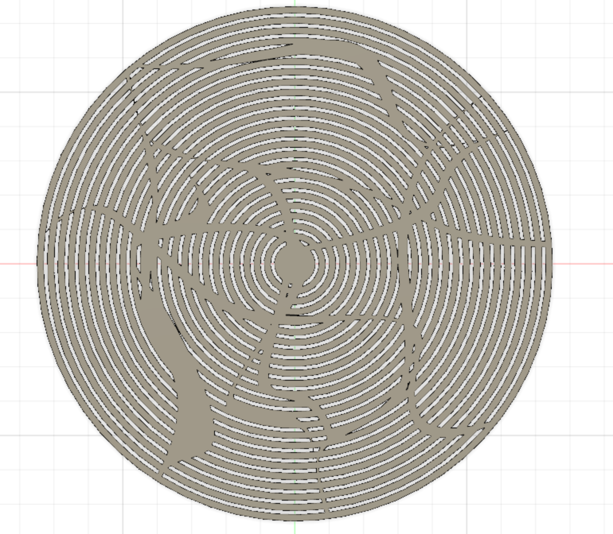
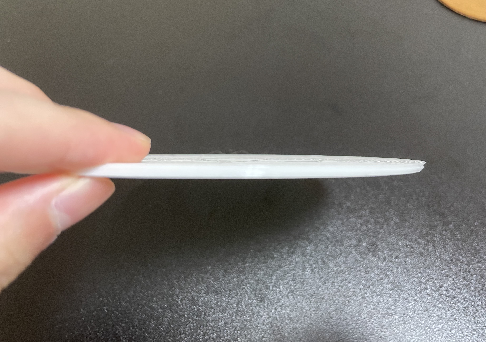

こんな模様になるように設計しました。前回と異なる点は隙間の長さと厚さと模様です。
厚さ=2.5mm 隙間=2.5mm 直径は前回と同様15cmで設計。
複雑な模様が印刷できるかどうかを知りたかったのでごちゃごちゃさせました。
印刷した

横から見ると斜めにずれていた。
正面から見ると、隙間がない部分が大半になっている。 印刷のスピードを調整しつつ、もう少し簡易な模様に変更した方が良さそう。
前回との比較
前回印刷したものはきれいに印刷できた。 今回は模様が見えない部分が多い。 今回の印刷で分かったことと前回の模様との例をもとに今後の製作に生かそうと思います。